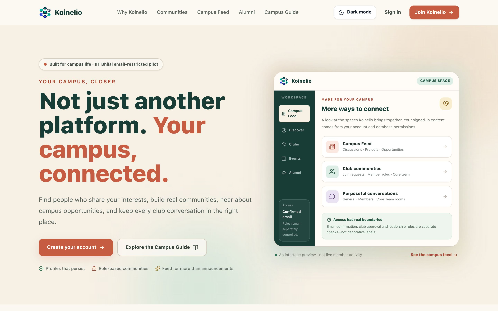

Territory 01
Koinelio
In Progress · IIT Bhilai email-restricted pilot

A Supabase-backed campus community platform for profiles, approved clubs, student leadership, events, notifications and role-restricted club rooms.
Implemented (per README)
- Supabase Auth sign-up restricted to confirmed
@iitbhilai.ac.inaccounts; sign-up can only create student profiles. - Persisted profile editing and avatar upload (JPG, PNG or WebP, up to 2 MB).
- Database-backed posts, likes, comments, events, registrations, announcements and notifications.
- Club proposals, membership requests, invitations, Core Member assignment and governance approvals.
- Three club rooms (General, Members, Core Team) with access enforced by Row Level Security.
- Post reporting with a moderator-only resolution flow; recruitment and elections pages exist in the app.
Stack
Honest limits
The README describes this as under production hardening: the access and governance migrations have not been validated on a staging database or applied to the live Supabase project, and it is not an official IIT Bhilai service. The repository includes Node test files for governance security and post classification.